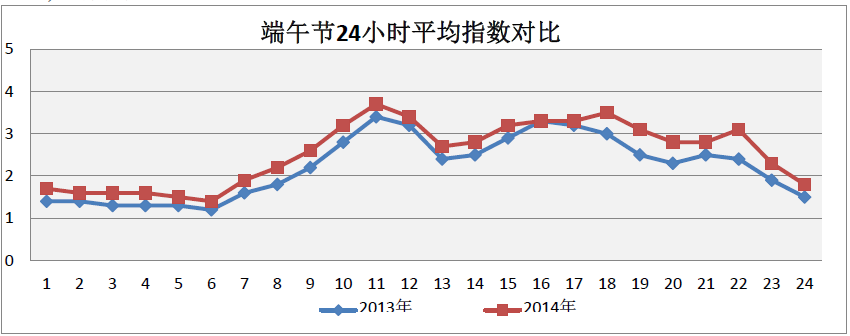
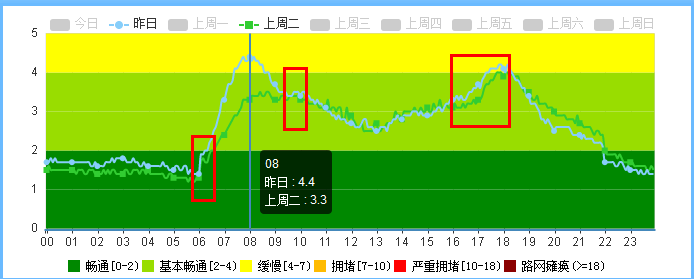

四维交通指数帮助
一、什么是四维交通指数？
四维交通指数就是结合道路实际速度及道路通行条件等的基础上，加入对交通拥堵的主观感受程度，并用量化方法来表达的道路交通运行状况。
通俗的说，是指某条道路的实际车速，与该道路上驾驶员自由选择的行驶速度的比值。比值越大，道路越拥堵。
四维交通指数以5分钟为计算单位，可以实时反映路网运行状态。同时，还可以直观了解通勤早晚高峰、节假日、重大活动等特殊时间周期不同时间段路网运行情况。
四维交通指数分为6个等级：
表1：四维交通指数等级划分标准
|
指数区间 |
指数等级 |
运行状况 |
|
0-2 |
畅通 |
交通运行状况良好，车速高，基本无拥堵 |
|
2-4 |
基本畅通 |
交通运行状况较好，车速较高，只有较小比例道路拥堵 |
|
4-7 |
缓慢 |
交通运行状况一般，车速缓慢，有一定比例道路拥堵 |
|
7-10 |
拥堵 |
交通运行状况较差，车速不高，有较大比例道路拥堵 |
|
10-18 |
严重拥堵 |
交通运行状况很差，车速很低甚至阻塞停驶，道路拥堵比例很高 |
|
>18 |
路网瘫痪 |
交通运行状况非常差，出现大面积道路阻塞，车辆停驶比例显著 |
二、教你看懂四维交通指数
1、以端午节为例
下图是2013、2014年端午节放假三天的道路指数：
图1：2013、2014年端午节放假24小时平均指数对比

可以看出：
1）2013、2014年端午节人们出行规律非常类似，3天的指数变化曲线趋势基本一致；
2）明显差异是：2014年5月31日晚21点左右以及6月1日下午16-17点左右北京出现的强降雨，造成2014年端午节平均指数上升。
2、以学生开学为例
下图是2014年9月开学前后的道路指数：
图2：2014年9月2日和8月26日（周二）平均指数对比
9月2日——蓝色指数线
8月26日——绿色指数线

可以看出：
1）早高峰：9月2日（开学后）和8月26日（开学前），从6点开始交通指数上升，明显差异是在6:00-9:30时间段，9月2日（开学后）的指数明显高于8月26日（开学前），在早上8点达到拥堵最高值，平均交通指数是4.4。
2）晚高峰：9月2日（开学后）和8月26日（开学前），从下午16:00-18:00交通指数上升，此时间段内，9月2日（开学后）的交通指数都略高于8月26日（开学前）。
三、四维交通指数有什么用
使用者可以通过多种方式获得四维交通指数，包括：官方网站、外网调用、APP、微信服务号、指数报告等，用途如下：
1、如果您是出行者：四维交通指数可为您量身定制出行指导参考，包括出行时间选择、路径规划，判断交通状况的“晴雨表”。
2、如果您是政策制定者：例如交通管理部门，在制定治堵政策及采取相应措施时，可以藉此得到有数交通信息大数据支撑的有效方案。交通指数作为评价路网服务水平的重要指标、制定治堵政策的评价指标，对交通管理部门的科学决策具有一定指导作用。
3、同时，基于历史交通指数，也可以从不同维度分析过去一段时间交通状况的变化，如历史指数变化（月、周变化）、拥堵区域变化、拥堵路段变化等，从而为交通政府部门提供决策支持。